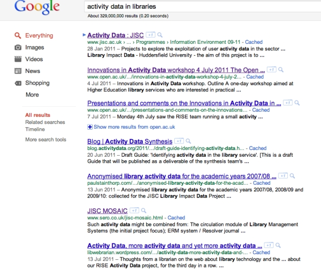

International
This section is not intended to be a comprehensive listing or review of activity data related work in
UK or global Higher Education. It does however highlight work we have come across that is of
particular relevance with reference to the JISC Activity Data programme.
Google searches indicate that the UK Higher Education sector to be playing a leading role in the
field of activity data with reference to libraries. A search for ‘activity data in libraries’ (10- sep 2011)
returned UK projects and events as hits 1-7. Whilst this may to some extent be true, the JISC
programme reported here established valuable engagements with US projects engaged in the
library field - notably LibraryCloud and Metridoc (see
collaborative partners). In addition we should
be aware of developments in the e-journals space, not least the MESUR project and the ExLibris
bX product (see prior developments
).
Furthermore, we should take semantics in to account when researching developments outside the
UK and beyond the library domain. Much work elsewhere, notably but not exclusively in North
America, is referenced as ‘Analytics’, whilst the expression ‘User Tracks’ has been used in
Denmark. Sections Academic analytics resources from Educause
and Other Publications and Online Resources note educational and learning analytics research, projects and tools that
present important insights to inform UK developments.
